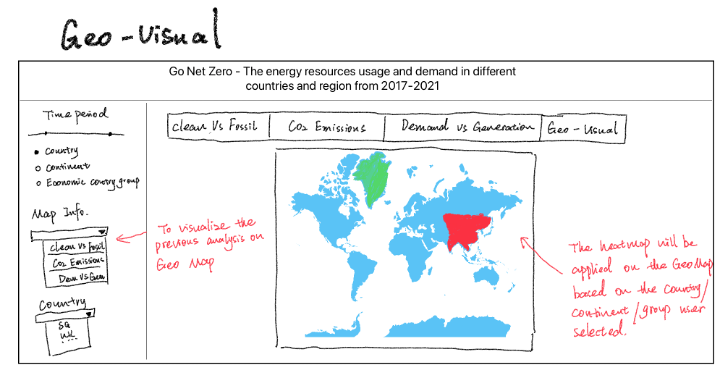

Proposal
Motivation
Energy resources and demand are important factors in our daily lives and the global economy. The demand for energy is growing as the world’s population increases, but the increasing use of energy also contributes to global warming and climate change. The purpose of this project is to examine the energy resources and demand in different countries and regions over the past three years, with a focus on reducing carbon emissions. By analyzing energy generation patterns and identifying areas where changes can be made, we hope to raise awareness and motivate individuals, businesses, and governments to take action towards a more sustainable future.
Dataset
The dataset utilized in this study was obtained from ember-climate.org, featuring comprehensive monthly generation, emissions, and demand data for 85 geographies. The time frame under investigation ranges from 2017 to 2021.
Possible Packages
The following are the packages required for this project, including but not limited to: Tidyverse, lubridate, ggiraph, gganimate, ggstatsplot, infer.
Proposed Visualization
Problem 1
Analysis
Fossil fuel dependence: One problem to examine is the extent to which different countries and regions rely on fossil fuels compared to clean energy sources. This information can highlight areas where greater investment in renewable energy sources is needed.
It is observed from the monthly electricity data that there are two types of energy sources in general: import and generate, and in the method of generation, there are clean and fossil.
So that we have:
Net import + total generation = Demand
Total generation = Clean + Fossil
Clean Energy = Renewable Energy + Nuclear Energy
Skeleton

Problem 2
Analysis
This sector would be focusing on CO2 emissions. It is planned to provide both a horizontal and a vertical comparison of CO2 emissions among various countries within the same geographic or political category, as well as the same country within a specific period. Upon monitoring the CO2 emissions, we will also observe what the correlations are between emissions and electricity indexes for each country with a heatmap.
Skeleton


Problem 3
Analysis
Energy demand vs generation: It’s important to examine the gap between energy demand and generation in different countries and regions. This information can be used to inform infrastructure planning and investment decisions to meet growing energy needs in a sustainable way.
Skeleton

Problem 4
Analysis
Geo map visualization: It is planned to visualize the previous three analyses on the Geo map, another heatmap layer will be applied on top of the map to give audiences a better understanding of the correlation between different countries and continents.
Skeleton
